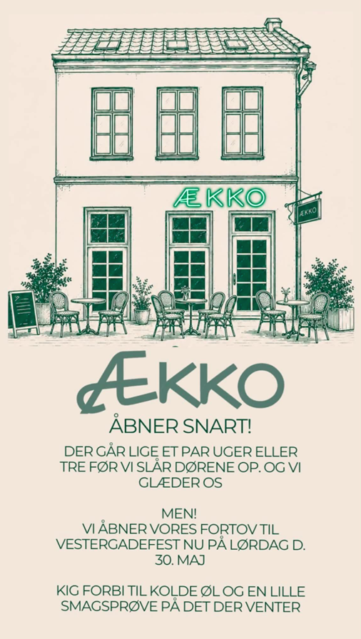
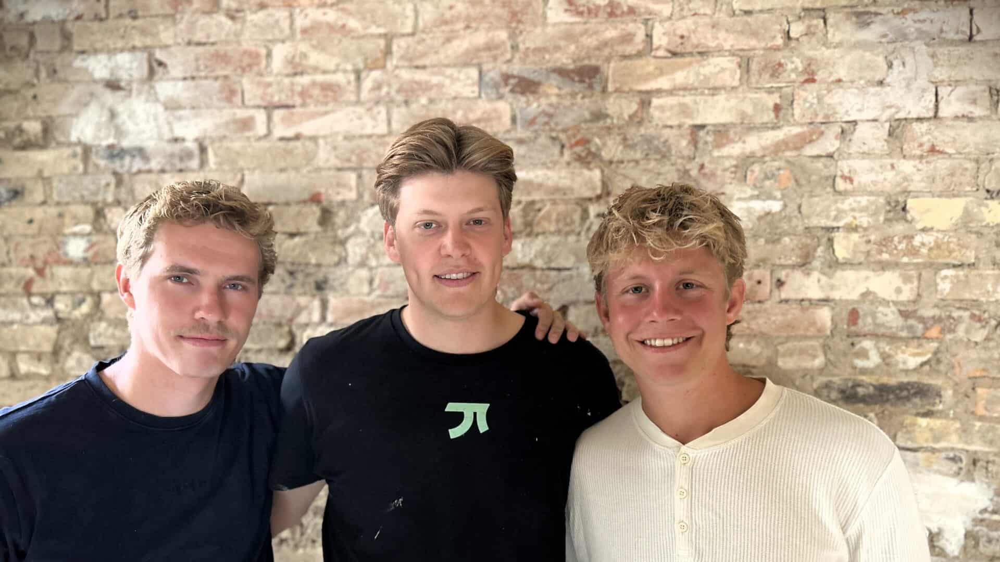

Så løftede vi det første gulvbræt.
Det begyndte med et tomt vindue.
Vi gik forbi det hver weekend. Nummer 46, midt i Vestergade, med papir for ruden og ingenting bag den. Et helt år stod stedet og lavede ingenting, mens resten af gaden fyldtes op. På et tidspunkt begyndte vi at pege gennem støvet: baren derovre, køkkenet bagved, noget der ligner et klaver i hjørnet. Så ringede vi til lejeren, mest for at få ro i hovedet. Der var ingen plan for stedet. Nu var der.
1. maj fik vi nøglerne. Tre venner fra Skanderborg, Ry og Silkeborg, der havde mødt hinanden på studiet, og som havde regnet grundigt på alting undtagen det, der lå under gulvet.
Planen var en måned. Rydde op efter vandpibecaféen, der havde boet her, male, hænge lamper op, åbne til sommer. Den plan holdt, til vi løftede det første gulvbræt. Under det var træet råddent. Bag væggene skulle el og vvs laves om fra bunden. Vi kunne have lappet det og åbnet til tiden. I stedet rev vi det hele ned og byggede stedet op igen, så det stadig står om ti år. Det tog tre måneder. Og syv eksamener, som vi læste til på skift mellem to skruemaskiner.
Vi har aldrig stået alene i lokalet. Omkring 40 venner har været forbi med værktøj, en kok og et par håndværkere har lagt aftener i det, og naboerne i gaden er kommet ind for at spørge, hvordan det går, og gå igen med et telefonnummer, vi skulle bruge. Der er en del pizzaer i restance.
Tilbage står mørkt træ, stål og de rå mure, vi har banket fri i hånden. Plads til 50 indenfor og omkring 30 på fortovet, når solen står ned ad gaden. Den 21. august låser vi op. Så er det bare jer, der mangler.

Omtalt i Århus Stiftstidende og Mig og Aarhus, august 2026.
Vi mødte hinanden på studiet i Aarhus. To af os blev færdige med bacheloren midt i byggerodet. Den sidste mangler et år.

Kaffe, en bolle med ost, en granolabowl, en toast. Tag computeren med, eller lad være. Ingen kommer og kigger på dit tomme glas.
Fadøl fra Ebeltoft Gårdbryggeri og Carlsberg, tre røde og tre hvide på glas, og et par cocktails vi selv har fundet på, blandt andet vores egen limoncello. Oliven og chips står på bordet uden at koste ekstra.
Et klaver, en guitar, navne du kender og navne du snart gør. Vi har bygget stedet til at kunne tåle lyd, men aldrig så højt, at du ikke kan snakke over bordet.